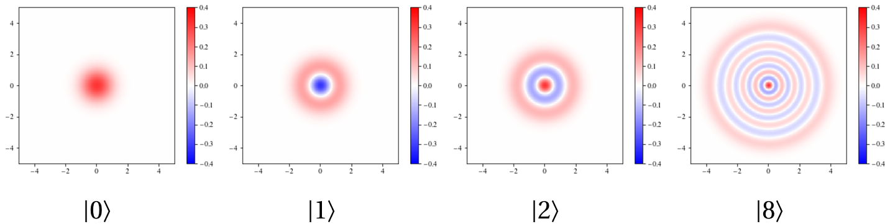
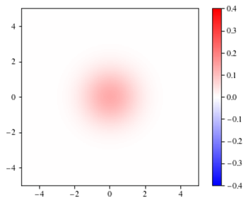
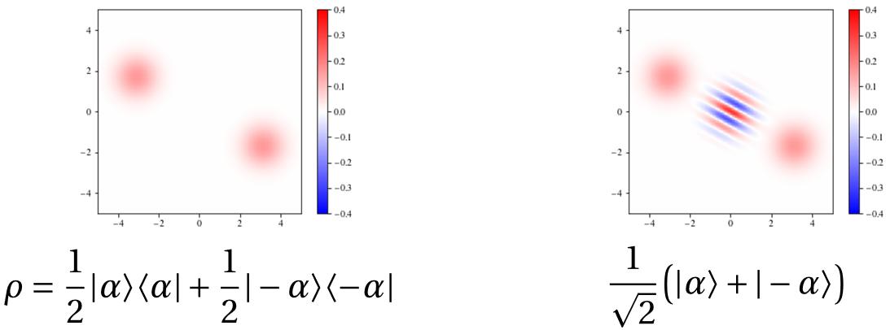

在许多情况下，例如研究原子与电磁场相互作用中，我们只关心原子的状态，而这时态矢不足以描述整个量子系统的状态，我们需要引入密度矩阵的概念来描述更为复杂的量子态。本章中我们将主要学习：密度矩阵的偏迹、约化密度矩阵、热学态，以及 P-function、Q-function 和 wigner-function
密度态
密度态定义
我们先尝试表示两个态 ∣↑⟩ 和 ∣↓⟩ 以概率 50%:50% 的组合。
I) 首先是量子叠加态：
∣Φ⟩=21(∣↑⟩+∣↓⟩)
那么我们计算 σx 在这个态上的期望值
⟨Φ∣σx∣Φ⟩=21(⟨↑∣+⟨↓∣)(∣↓⟩⟨↑∣+∣↑⟩⟨↓∣)(∣↑⟩+∣↓⟩)=1
II) 再来看经典概率组合：∣↑⟩ 的概率为 p↑，∣↓⟩ 的概率为 p↓，那么 σx 在这个组合态上的期望值为
⟨σx⟩=p↑⋅⟨↑∣σx∣↑⟩+p↓⋅⟨↓∣σx∣↓⟩≡0
可以看到，两个态的期望值是不同的，而量子态无法描述这种经典概率的组合态，因此我们需要引入密度矩阵的概念
ρ=i∑pi∣Ψi⟩⟨Ψi∣
其中 pi 是态 ∣ψi⟩ 出现的概率，满足 ∑ipi=1。
力学量算符的平均值为
⟨o^⟩=i∑pi⟨Ψi∣o^∣Ψi⟩
那么我们为什么要引入密度矩阵呢？因为我们可以将期望值写成密度矩阵的迹的形式：
⟨o^⟩=Tr(ρo^)=n∑⟨n∣ρo^∣n⟩=i∑pi⟨Ψi∣o^∣Ψi⟩
密度矩阵是经典概率和量子态的结合体，可以描述更为复杂的量子态。
力学量算符在纯态下的期望值为
⟨o^⟩=Tr(o^∣Ψ⟩⟨Ψ∣)=⟨Ψ∣o^∣Ψ⟩
一般有 Tr(ρ2)≤1，当且仅当 ρ 表示纯态时取等号，Tr(ρ2) 称为纯度。
密度态的演化
解薛定谔方程（一阶微分方程）
iℏ∂t∣ψt⟩=H^∣ψt⟩
只有当 ∣ψt⟩ 为孤立系统时，薛定谔方程才成立。
其解为
∣ψt⟩=e−iH^t/ℏ∣ψ0⟩=U^t∣ψ0⟩
态矢的时间演化由薛定谔方程描述，那么密度矩阵的时间演化由什么方程描述呢？考虑一个纯态，根据
ρ(t)=∣ψt⟩⟨ψt∣ρ(0)=∣ψ0⟩⟨ψ0∣
我们有
ρ(t)=e−iH^t/ℏρ(0)eiH^t/ℏ=U^t⋅ρ(0)⋅U^t†
对 ρ(t) 求时间导数，有
∂tρ(t)=[∂t∣ψt⟩]⟨ψt∣+∣ψt⟩[∂t⟨ψt∣]=iℏ1H^∣ψt⟩⟨ψt∣−∣ψt⟩iℏ1⟨ψt∣H^=iℏ1(H^ρ(t)−ρ(t)H^)=−iℏ1[ρ(t),H^]
我们称这为冯·诺依曼方程，和薛定谔方程一样，都要求系统是孤立的。
刘维尔方程与冯·诺依曼方程的对比
∂tρ=−{ρ,H^(x,p)}（经典刘维尔方程）
∂tρ^=−iℏ1[ρ^,H^]（量子冯诺依曼方程）
这正是正则量子化的体现，并注意和海森堡绘景相差一个负号
dtdo^=iℏ1[o^,H^]
下面我们考虑海森堡表象下密度矩阵的时间演化。海森堡表象下，态矢不变，随时间演化的是算符。可观测量的期望值为
⟨ψt∣o^∣ψt⟩=⟨ψ0∣U^t†⋅o^S⋅U^t∣ψ0⟩=⟨ψ0∣o^H(t)∣ψ0⟩
其中 o^S 是薛定谔表象下的算符，o^H(t) 是海森堡表象下的算符，o^H(t)=U^t†⋅o^S⋅U^t。
- 注意：上面密度态的时间演化是在薛定谔表象下的时间演化，而力学量算符的时间演化在海森堡表象下进行，给我们一种密度态时间演化和力学量的时间演化相反的错觉。
- 密度矩阵既是算符也是量子态。在海森堡表象下，密度算符随时间演化的幺正变化与力学量算符的时间演化类似，但在变换后我们发现密度矩阵实际上并不随时间变化，又体现了态的性质。
ρH(t)=U^t†⋅ρS(t)⋅U^t=ρS(0)
我们也可以通过密度矩阵对力学量算符求平均值：
⟨o^⟩=Tr(ρS(t)⋅o^S)=Tr(U^tρS(0)U^t†⋅o^S)=Tr(ρS(0)⋅U^t†o^SU^t)=Tr(ρH(0)⋅o^H(t))
可见力学量算符平均值的计算在两种表象下是等价的。
二能级系统的密度态
二能级的密度矩阵表示
先定义 n^e=∣e⟩⟨e∣，n^g=∣g⟩⟨g∣，由于它们的平均值可写为
⟨n^e⟩⟨n^g⟩=Tr(ρ∣e⟩⟨e∣)=⟨e∣ρ∣e⟩=ρee=Tr(ρ∣g⟩⟨g∣)=⟨g∣ρ∣g⟩=ρgg
因此密度矩阵可写为：
ρ=⟨ne⟩∣e⟩⟨e∣+⟨ng⟩∣g⟩⟨g∣+ρeg∣e⟩⟨g∣+ρge∣g⟩⟨e∣
再定义 ρeg=⟨e∣ρ∣g⟩=⟨σ^−⟩，ρge=⟨g∣ρ∣e⟩=⟨σ^+⟩。那么有 σ^−:=∣g⟩⟨e∣，σ^+:=∣e⟩⟨g∣。
- n^e 和 n^g 类似于 Fock 态中的粒子数算符 n^=a^†a^，表示系统处于激发态和基态的概粒子数。
- 从 σ^−∣e⟩=∣g⟩⟨e∣∣e⟩=∣g⟩ 和 σ^+∣g⟩=∣e⟩⟨g∣∣g⟩=∣e⟩ 可见，σ^− 和 σ^+ 类似于 Fock 态中的湮灭算符 a^ 和产生算符 a^†
根据上式，在基态 ∣g⟩ 和激发态 ∣e⟩ 的表示下，密度矩阵可写为
ρ=(ρeeρgeρegρgg)
密度矩阵非对角元就是基态和激发态的升降算符 σ^+ 和 σ^− 的平均值。
基态和激发态的升降算符 σ^+ 和 σ^− 和泡利矩阵有以下关系
σ^±=21(σ^x±iσ^y)
类似于 Fock 态中的产生算符和湮灭算符
a^=21(x^+ip^),a^†=21(x^−ip^)
纯态密度矩阵
一个纯态可写为
∣ψ⟩=cos2θ∣0⟩+eiϕsin2θ∣1⟩
根据 ⟨ψ∣σi∣ψ⟩ 可由矩阵计算出泡利算符的平均值
⟨σ^x⟩=sinθcosϕ,⟨σ^y⟩=sinθsinϕ,⟨σ^z⟩=cosθ
那么泡利算符的模方为
⟨σ^x⟩2+⟨σ^y⟩2+⟨σ^z⟩2=1
这表明任意一个纯态 ∣ψ(θ,ϕ)⟩ 都对应于 Bloch 球面上的一个点 (θ,ϕ)
任意态密度矩阵
可以证明任意态的密度矩阵都能展开为
ρ=21(1+⟨σ^x⟩σx+⟨σ^y⟩σy+⟨σ^z⟩σz)
且有 Tr(ρ2)=21(1+⟨σ^x⟩2+⟨σ^y⟩2+⟨σ^z⟩2)≤1，当且仅当 ⟨σ^x⟩2+⟨σ^y⟩2+⟨σ^z⟩2=1 时取等号，即纯态。
类似于复合系统的态空间是各子系统态空间的张量积，N 个二能级系统的密度矩阵也能看作是各二能级系统密度矩阵的张量积
ρN=2N1i1,i2,…,iN=0∑3⟨σi1σi2…σiN⟩σi1σi2…σiN
- 量子测量就是将一个一般的密度矩阵转变为一个对角密度矩阵的过程，其中的对角元代表经典概率，而非对角元全部变为零代表量子叠加的丧失。
- 在正交归一基下，纯态和混态的密度矩阵分别为
ρpure=∣ψ⟩⟨ψ∣=10⋱0ρmixed=i∑pi∣ψi⟩⟨ψi∣=p1p2⋱pn
偏迹
若是系统为一个纯态的两体系统，波函数或态矢无法直接描述其中一个单体系统的状态，我们只能引入混态密度矩阵来完成这件事。设复合系统的基矢为 {∣Am⟩⊗∣Bn⟩}，则其密度矩阵为
ρAB=m,n∑i,j∑ρmi,nj∣Am⟩⟨An∣⊗∣Bi⟩⟨Bj∣=m,n∑i,j∑ρmi,nj∣AmBi⟩⟨AnBj∣
根据上节，任意力学量算符在复合系统中的平均值为
⟨O^AB⟩=Tr(ρABO^AB)=m,n∑i,j∑ρmi,nj⟨AnBj∣O^AB∣AmBi⟩
但若我们只关心力学量算符 O^A 在子系统 A 上的平均值，该如何计算呢？根据定义，我们可以通过下式计算子系统 A 上力学量算符 O^A 的平均值
⟨O^A⟩=Tr(ρAO^A)=Tr(ρAO^A⊗IB)=Tr(ρABO^A⊗IB)=m,n∑⟨AmBn∣ρABO^A⊗IB∣AmBn⟩=m,n∑l∑⟨AmBn∣ρAB∣Bl⟩⟨Bl∣O^A⊗IB∣AmBn⟩=m,n∑l∑⟨Am∣(⟨Bn∣ρAB∣Bl⟩)O^A∣Am⟩δln=m∑⟨Am∣(l∑⟨Bl∣ρAB∣Bl⟩)O^A∣Am⟩
同一子空间的态矢和算符只会和同一子空间的态矢和算符发生作用，而不同子空间的态矢和算符是对易的。
我们可以定义子系统 A 的约化密度矩阵 ρA
ρA=TrB(ρAB)=n∑⟨Bn∣ρAB∣Bn⟩
这就是偏迹。偏迹将一个子系统的自由度“迹掉”，从而得到另一个子系统的约化密度矩阵。
例如，设复合系统的量子态为 ∣Ψ⟩=21(∣00⟩+eiϕ∣11⟩)，则其密度矩阵为
ρAB=∣Ψ⟩⟨Ψ∣=21(∣00⟩⟨00∣+eiϕ∣00⟩⟨11∣+e−iϕ∣11⟩⟨00∣+∣11⟩⟨11∣)
则子系统 A 和 B 的约化密度矩阵分别为
ρA=ρB=TrB(ρAB)=21(∣0⟩⟨0∣+∣1⟩⟨1∣)
可以看到，子系统 A 和 B 都处于 50%:50% 的混态，这只有经典概率而无量子概率，态矢无法描述这种状态。
再来看两个力学量算符乘积的平均值
⟨O^AO^B⟩=Tr(ρABO^AO^B)
那么是否可以写成
⟨O^AO^B⟩=⟨O^A⟩⟨O^B⟩?
显然这类似于经典力学中的独立事件的概率乘积，对应于量子力学就是两个直积态。若是复合系统的态矢为直积态 ∣ΨAB⟩=∣ψA⟩⊗∣ϕB⟩，则密度矩阵也为直积态 ρAB=ρA⊗ρB，那么有
⟨O^AO^B⟩=⟨ψAϕB∣O^AO^B∣ψAϕB⟩=⟨ψA∣O^A∣ψA⟩ ⟨ϕB∣O^B∣ϕB⟩=⟨O^A⟩⟨O^B⟩=⟨ρAO^A⟩⟨ρBO^B⟩
这样的量子态就称为可分离态。一般的可分离态密度矩阵可写为：
ρAB=n∑pnρAn⊗ρBn
若是无法写成这种形式，那么则为纠缠态。
纯态和混态、纠缠态和可分离态是两对不同范畴的概念
密度矩阵可以看作是经典概率的量子推广
热态
热态的光子数分布
当系统和环境处于热平衡时，我们就需要研究热态。热态的密度矩阵为
ρT=Z1e−H^/kBT=n∑Ze−βωn∣n⟩⟨n∣
配分函数 Z=∑ne−βωn=eβω−1eβω（等比数列）。分别计算热态下的平均粒子数（普朗克函数）和粒子数平方的平均值：
⟨n^⟩⟨n^2⟩=Z1n∑ne−βωn=Z1∂−βωZ=eβω−11:=np(ω,T)=Z1n∑n2e−βωn=Z1∂−βω2Z=2np2+np
因此热态下粒子数的涨落为
⟨δn2⟩=⟨n^2⟩−⟨n^⟩2=np2+np
和上章相同，我们可以定义热态下的相对粒子数涨落为
⟨n^⟩⟨δn2⟩=1+np1∼1
与泊松分布的相对涨落 n1 相比，热态的相对粒子数涨落趋于常数 1。也就是说，随着光强增强，涨落也随之增强，这就是热光的特性；而激光满足的泊松分布则表现为光强增强时，涨落相对减小。
黑体辐射谱
已知能量密度为
E^=21ϵ0E^2+2μ01B^2
和量子化电磁场的电场、磁场表达式
E^(r,t)B^(r,t)=kσ∑ekσ2ϵ0Vℏω[ia^kσei(k⋅r−ωkt)+h.c.]=kσ∑(ck^×ekσ)2ϵ0Vℏω[ia^kσei(k⋅r−ωkt)+h.c.]
电场能量密度和磁能密度的平均值为
⟨21ϵ0E^2⟩=4Vℏωkkσ∑(⟨a^kσa^kσ†⟩+⟨a^kσ†a^kσ⟩)=kσ∑2Vℏωknp(ωk,T)=⟨2μ01B^2⟩
因此总能量密度为
⟨E^⟩=kσ∑Vℏωk⋅np(ωk,T)
计算该式
⟨E^⟩=σ∑∫(2π)3Vd3k⋅Vℏωk⋅eℏωk/kBT−11=(2π)32∫02πdϕ∫0πsinθdθ∫0∞k2dk⋅ℏωk⋅eℏωk/kBT−11=∫0∞dωc3π21⋅eℏω/kBT−1ℏω3
上式利用了态密度 ρ(k)dk=(2π)3V4πk2dk 和色散关系 ω=ck。因此 ω 单位频率范围内的能量密度为
u(ω,T)=dωd⟨E^⟩=π2c31⋅eℏω/kBT−1ℏω3
这就是黑体辐射光谱
P函数、Q函数和Wigner函数
P函数
P函数的导出
根据相干态与 Fock 态的关系我们可以反推出 Fock态 的表达式
∣n⟩⟨m∣=[n!1∂αn∂n(e∣α∣2/2∣α⟩)]α→0=[m!1∂(α∗)m∂m(e∣α∣2/2⟨α∣)]α→0
那么密度态为
ρ=[n,m∑n!m!ρnm∂αn∂α∗m(e∣α∣2∣α⟩⟨α∣)]α→0=∫d2α δ(2)(α)[n,m∑n!m!ρnm∂αn∂α∗m(e∣α∣2∣α⟩⟨α∣)]=∫d2α e∣α∣2[n,m∑n!m!(−1)n+mρnm∂αn∂α∗mδ(2)(α)]∣α⟩⟨α∣=∫d2α P(α,α∗)∣α⟩⟨α∣
我们称 P(α,α∗) 为 P 函数。每一个 P 函数都对应一个密度矩阵，因此，P 函数可以看作是密度矩阵在相干态基下的表示。且 P 函数与几率分布十分类似。
注意：P 函数并非严格的概率分布函数，因为它可能取负值，甚至是奇异函数。
Fock 态 ρ=∣n⟩⟨n∣ 的 P 函数为
P∣n⟩(α,α∗)=n!e∣α∣2(∂α∂α∗)nδ(2)(α)
相干态 ρ=∣α0⟩⟨α0∣ 的 P 函数为
P∣α0⟩(α,α∗)=δ(2)(α−α0)
热态 ρT∼e−ℏω/kBT 的 P 函数为
PρT(α,α∗)=πnp1exp(−np∣α∣2)
正规序
在计算平均值时常需要计算正规序，正规序的定义如下：
⟨:(a^†)i(a^)n(a^†)j:⟩=⟨(a^†)i+ja^⟩
也就是改变顺序，将所有的产生算符移至最前。又因为
⟨(a^†)ma^n⟩=∫d2α P(α,α∗)⟨α∣(a^†)ma^n∣α⟩=∫d2α P(α)(α∗)mαn
所以任意包含 a^† 和 a^ 的算符平均值都可以通过正规序来计算
⟨:f(a^†,a^):⟩=∫d2α P(α)f(α∗,α)
P 函数对我们计算平均值十分有用。我们以 Fock 态为例，计算正规序的平均值
⟨:(a^†)ma^m:⟩=∫d2α δ2(α)∂αn∂α∗n[n!1(α∗)mαmeα∗α]=∂αn∂α∗n[n!1(α∗)mαmeα∗α]α→0={0,(n−m)!n!,m>nm≤n
和直接使用升降算符对 Fock 态直接计算的结果一致。对比经典光场的平均值
⟨f(E,ϕ)⟩classical=∫d(E,ϕ) P(E,ϕ)f(E,ϕ)
和 P 函数的平均值
⟨:f(a^†,a^):⟩=∫d2α P(α)f(α∗,α)
两者在形式上十分相似。如果某个状态下的 P 函数是一个正定的函数，那么该量子态就称为经典态。
特征函数求P函数
k阶矩 ⟨nk⟩=∑nnkPn。定义特征函数 χ(λ)
χ(λ):=⟨eλn⟩=n∑eλnPn=n∑k∑k!λknkPn=k∑k!λk⟨nk⟩
那么我们得到一种计算 ⟨nk⟩ 的方法
⟨nk⟩=[∂λkχ(λ)]λ→0
对于连续的概率密度函数（PDF） P(x)，类似地定义特征函数
χ(λ):=⟨eλx⟩=∫dx eλxP(x)=k∑k!λk⟨xk⟩
也会得到类似的结果
⟨xk⟩=[∂λkχ(λ)]λ→0
若将特征函数中的 λ 替换为 iλ，那么将会得到一个傅里叶变换：
χ(iλ):=⟨eiλx⟩=∫dx eiλxP(x)=k∑k!(iλ)k⟨xk⟩
若在实验中能测得 ⟨nk⟩，也就能得到特征函数，最后做一次傅里叶变换即可得到 P(x)。我们先介绍单变量的傅里叶变换
F(x)f~(k)=∫−∞+∞2πdk f~(k)eikx=∫−∞+∞dx F(x)e−ikx
上式中的 2π 因子的放置位置取决于傅里叶变换的定义习惯，可以放在正变换中，也可以放在反变换中，或者两者各放一半。为方便起见，我们将其全部放在天生带有 2π 的 dk 下。
而复变量的傅里叶变换为
χ~(λ,λ∗)P(α,α∗)=∫d2α P(α,α∗)eλα∗−λ∗α=∫π2d2λ χ~(λ,λ∗)e−λα∗+λ∗α
定义 P 函数的正规序特征函数：
χN(λ,λ∗):=⟨:eλa^†e−λ∗a^:⟩≡Tr(ρeλa^†e−λ∗a^)=⟨eλa^†e−λ∗a^⟩=n,m∑n!m!λm(−λ∗)n⟨(a^†)ma^n⟩=∫d2P(α)⋅[n,m∑n!m!λm(−λ∗)n⟨(a^†)ma^n⟩]=∫d2α P(α)eλα∗−λ∗α
那么 P 函数就可以通过正规序特征函数的傅里叶反变换得到
P(α,α∗)=π21∫d2λ χN(λ,λ∗)e−λα∗+λ∗α
注意：上式的积分可能发散
Fock 态 ρ=∣n⟩⟨n∣ 的正规序特征函数为
χN(λ)=m=0∑m!(−∣λ∣2)m(n−m)!n!=Ln(∣λ∣2)
相干态 ρ=∣α0⟩⟨α0∣ 的正规序特征函数为
χN(λ)=eλα0∗−λ∗α0
热态 ρT∼e−ℏω/kBT 的正规序特征函数为
χN(λ)=exp(−np∣λ∣2)
P 函数最大的优点是与经典相对应。在量子光学中，经典态就是 P 函数为正数且非奇异；而量子态就是 P 函数含有负值且可能比 δ 函数还要奇异。
相干态按中分类属于经典态
P 函数的缺点是计算处理十分复杂，且由于其奇异性，一些量子态例如 Fock 态的 P 函数无法由特征函数导出。
Q函数
对于热态，特征序正规函数的计算十分复杂，但我们可以通过定义在反正规序上的 Q 函数来简化计算。若在求期望值时将所有的 a^ 置于最前面，a^† 置于最后面，这就称为反正规序
⟨a^n(a^†)m⟩=∫d2α Q(α,α∗)αn(α∗)m
结合上式和过完备性关系可以推出 Q 函数的定义
Q(α,α∗):=π1⟨α∣ρ∣α⟩
那么 Q 函数的特征函数也可以定义为
χA(λ,λ∗):=⟨:e−λ∗a^eλa^†:⟩≡Tr(ρe−λ∗a^eλa^†)
计算得到
χA(λ,λ∗)=∫d2α Q(α,α∗)e−λ∗α+λα∗
既然 Q 函数与其特征函数 χA 之间存在傅里叶变换关系，那么和 P 函数类似，我们也可以对特征函数求导数得到
⟨a^n(a^†)m⟩=[∂λm(−∂λ∗)nχA(λ,λ∗)]λ→0
Q 函数的优点是形式简洁，易于计算
根据 Baker-Campbell-Hausdorff 公式，我们发现，Q 函数和 P 函数的特征函数之间存在关系
χA(λ)=e−∣λ∣2χN(λ)
因为 Q 函数易于计算，我们就可以间接求得 P 函数
Q(α,α∗)⟶χA(λ,λ∗)⟶χN(λ,λ∗)⟶P(α,α∗)
Wigner函数
Wigner函数的定义
Wigner 函数是一种介于 P 函数和 Q 函数之间的表示方法。我们先定义特征序，例如
{(a^†)2a^}=a^†a^†a^+a^†a^a^†+a^a^†a^†
就是取所有可能的顺序组合。Wigner 函数的特征函数定义为
χs(λ,λ∗):=⟨ eλa^†−λ∗a^⟩=Tr(ρeλa^†−λ∗a^)
称为对称序特征函数。可以发现，Wigner 函数的特征函数与 Q 函数和 P 函数的特征函数通过Baker-Campbell-Hausdorff 公式联系起来
χs(λ)=e∣λ∣2/2χA(λ)=e−∣λ∣2/2χN(λ)
对对称序特征函数进行具体计算
χs(λ)=⟨eλa^†−λ∗a^⟩=n∑n!1⟨(λa^†−λ∗a^)n⟩=r,s∑(r+s)!λr(−λ∗)s⟨{(a^†)ra^s}sym⟩
Wigner 函数通过对称序特征函数的傅里叶反变换定义为
W(α,α∗)=π21∫d2λ χs(λ,λ∗)eλ∗α−λα∗
同理特征序的平均值可以通过对称序特征函数求导得到
[∂λr(∂−λ∗)sχs]λ→0=(r+s)!r!s!⟨{(a^†)ra^s}sym⟩
通过 wigner 函数，我们可以计算对称序的平均值
∫d2α W(α,α∗)(α∗)rαs=π21∫∫d2α d2λ χs(λ)eλ∗α−λα∗(α∗)rαs=π21∫∫d2α d2λ χs(λ)⋅∂λ∗s∂−λreλ∗α−λα∗=∫d2λ χs(λ)⋅∂λ∗s∂−λrδ(2)(λ)=[∂λr(∂−λ∗)sχs]λ→0
但是 Wigner 当初并不是这样定义的。Wigner 最初是为了将量子力学中的波函数表示为类似于经典力学中的相空间分布函数而提出的。他定义的 Wigner 函数为
Wˉ(x,p)=2πℏ1∫dy ⟨x+2y∣ρ∣x−2y⟩e−ipy/ℏ
将下面几式代入
a^αλ=2ℏmω(x^+imωp^)=2ℏmω(x+imωp)=2ℏmω(y+imωq)
得到
Wˉ(x,p)=(2πℏ)21∫∫dq dy Tr(ρeℏi(yp^+qx^))e−ℏi(qx+py)=2ℏ1W(α,α∗)
相差 2ℏ1 是由于 dxdp 和 d2α 的量纲就相差 ℏ 的量纲。
Wigner表示
Wigner 引入的表示具有很好的性质
∫dp Wˉ(x,p)∫dx Wˉ(x,p)∫∫dx dp Wˉ(x,p)=⟨x∣ρ∣x⟩=P(x)=⟨p∣ρ^∣p⟩=P(p)=Tr(ρ)=1
这就对应于经典系综将 x 对密度函数 ρ(x,p) 积分得到动量空间的分布函数，将 p 对密度函数 ρ(x,p) 积分得到位置空间的分布函数。将 Fock 态的 Wigner 表示绘制成下图，其中蓝色部分表示负值

热态的 Wigner 函数图像为一个高斯分布，温度越高，分布越低越宽广。

混态和叠加态的 Wigner 图像区别在于叠加态具有表示量子相干性的交叉区域，而混态则没有。

上述态的 Wigner 表示都为波包的形式，这正是不确定性的体现。
总的来说，P 函数具有与经典对应的物理意义——准概率密度（可以有负值），但计算复杂；Q 函数只有计算简单的优点，其值总为正；Wigner 函数也有负值，但是可以导出真正的相空间概率密度分布，能够将量子态可视化。